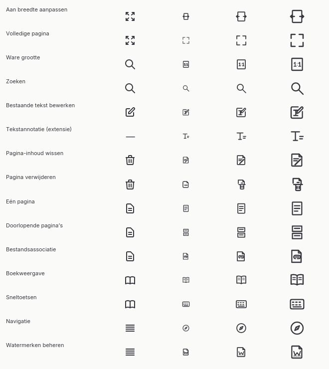
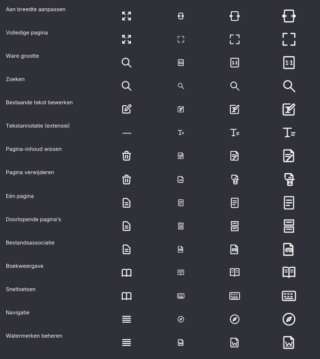

Beoordelingskader. Links staat de bestaande bronvorm, rechts het semantische voorstel. Controleer herkenning, onderlinge afstand en leesbaarheid op 16, 24 en 32 px. Tekstannotatie heeft in de ingebouwde ribbon geen aanroep; de bronexport blijft wel via extensies aanspreekbaar. De native contactbladen hieronder toetsen de voorstellen in de echte Iced-renderer.
Links: bestaande bronRechts: voorstel / hergebruik
Aan breedte aanpassen
Schaal en zoeken · fitWidthIconnew-draft
Volledige pagina
Schaal en zoeken · fitPageIconreuse-existing-crate-icon · Icon::Fit
Ware grootte
Schaal en zoeken · actualSizeIconnew-draft
Zoeken
Schaal en zoeken · findIconreuse-existing-crate-icon · Icon::Search
Bestaande tekst bewerken
Tekstbewerking · editTextIconnew-draft
Tekstannotatie (extensie)
Tekstbewerking · textAnnotIconGeen ingebouwde UI-aanroep
162432
reuse-existing-crate-icon · DomainIcon::DrawingText
Pagina-inhoud wissen
Pagina-inhoud en pagina · clearPageIconnew-draft
Pagina verwijderen
Pagina-inhoud en pagina · deletePageIconnew-draft
Eén pagina
Weergave en associatie · singlePageIconnew-draft
Doorlopende pagina’s
Weergave en associatie · continuousIconnew-draft
Bestandsassociatie
Weergave en associatie · fileAssocIconnew-draft
Boekweergave
Boek en hulp · bookViewIconnew-draft
Sneltoetsen
Boek en hulp · shortcutsIconnew-draft
Navigatie
Navigatie en watermerk · navigationIconnew-draft
Watermerken beheren
Navigatie en watermerk · manageWatermarksIconnew-draft
Native Rust-vergelijking
Per betekenis: bron op 24 px, voorstel op 16/24/32 px. De vier compacte 16px-versies hebben eigen geometrie. Dit is visuele beoordeling; de voorgestelde SVG’s zijn nog niet in de publieke crate opgenomen.

